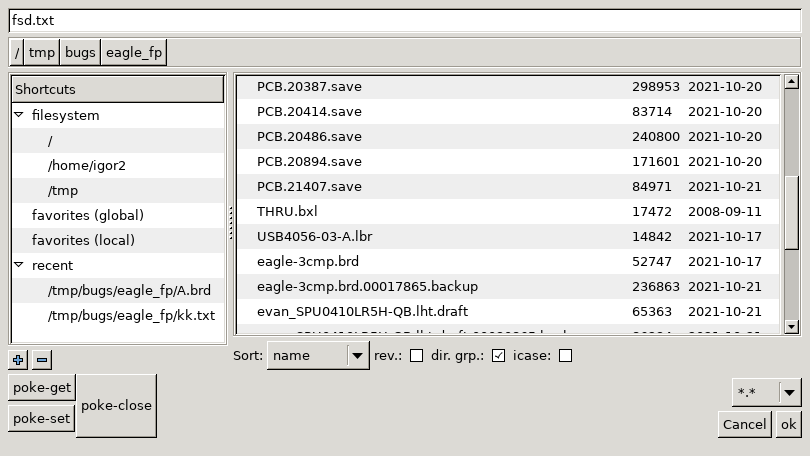

The fsd is used to present the file system and assist the user in selecting an existing file for load or a directory and a file name for save. The dialog consists of five main sections:

The dialog box has an important state: CWD (Current Working Directory). This is the directory the dialog box is listing at the moment and does not affect the CWD of the application. The user has multiple options to change the CWD of the dialog box.
The top part features the file name text input. If a directory name is entered here (either absolute or relative to current CWD), the dialog box switches CWD to that directory. If a file name (either absolute or relative to the current CWD) is entered and enter is pressed (or the ok button is clicked), it is taken as the resulting file name and is returned and the dialog box is closed.
Still in the top part A horizontally aligned set of directory buttons follows. This displays the CWD. Each button represents a directory in the absolute path to CWD. If the CWD is changed in any way these buttons are updated. If CWD path is too deep, the central few directories are substituted with "...", displaying only the first few and last few buttons of the path. If any directory name on the path is longer than configured (in plugins/lib_hid_common/fsd/dirname_maxlen), it's truncated. When a directory button is clicked, the CWD is changed to that directory.
The middle left part is a 2 level tree of shortcuts. First level entries are:
Double clicking(or selecting and pressing enter) on a directory will change CWD to that directory. Double clicking(or selecting and pressing enter) on a file will make that file the result of the dialog (closes the dialog). Pressing the '+' button will add CWD to Favorites (local or global, depending on where the cursor is in the shortcuts tree). Pressing the '-' button while an entry is selected will remove the entry.
Favorites/recents are saved in plain text files upon any user input that changes them. The files are kept in fsd/ under the application's dotdir, e.g. ~/.pcb-rnd/fsd/ for pcb-rnd.
The middle right part is a flat list of files and directories found in CWD. Size is in bytes, last modification date is in ISO 8601 (year-month-day).
Double clicking (or selecting and pressing enter) on a directory on this list will change CWD to that directory. Double clicking (or selecting and pressing enter) on a file on this list will close the dialog and return that file as result of the fsd. While navigating this list (single click or keyboard), the file name text input is updated with the file name the cursor is on.
Under the file listing there is a row of widgets for sorting. The first combo box decides by which column the list is sorted. If the checkbox for "rev." is ticked, sort order is reversed. If the checkbox for "dir. grp." is ticked, directories are grouped and separately from files. The default valuye of "dir. grp." is determined by the config node plugins/lib_hid_common/fsd/dir_grp.
The bottom left part optionally hosts a subdialog that is specific for the operation the fsd is invoked for. It typically lists file format and I/O options.
The bottom right part consists of the "cancel" and "ok" buttons. If the "cancel" button is clicked, the dialog closes and returns "no file selected". If the "ok" button is clicked the full path of the file entered in the file name text input is returned as the result (and the dialog box is closed). If the text input is empty, the 'ok' button is a no-op.